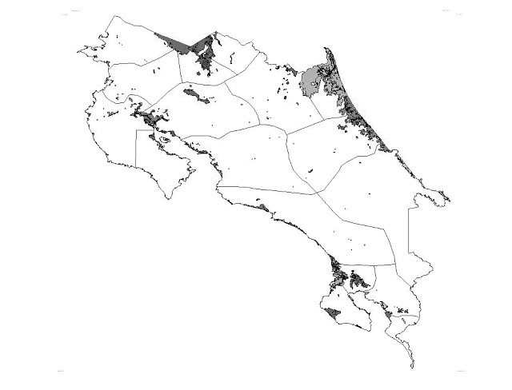
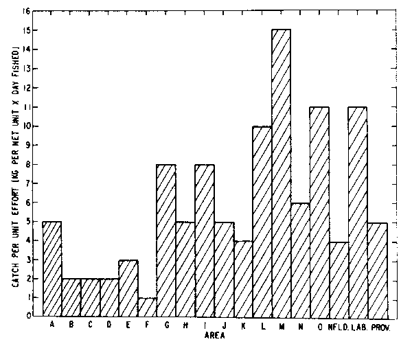
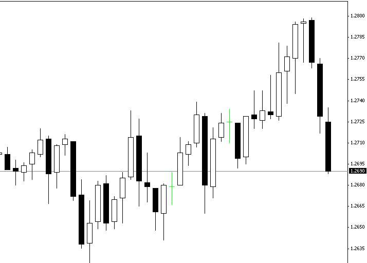

Ver en imagen en pantalla completa
Para Iván
Sistema de Reportes
Accidentes en CR
2012-2014
2018
José Andres Ceciliano
Silvia Calderón
Filtro por campo
01

Filtro por campo
02

Filtro especifico
03

TEC
Regresar